Installing Windows Subsystem for Linux (WSL) for Windows OS Users
If you are working on Linux OS or macOS, please skip this tutorial and move on to Installing Conda and Bioinformatics Tools and follow the instructions
Overview
In this lesson, we will install Windows Subsystem for Linux (WSL) and Ubuntu on a Windows laptop.
WSL provides a Linux environment inside Windows, allowing us to run bioinformatics software and command-line tools without needing a separate Linux installation.
We will cover:
- Installing WSL
- Setting up Ubuntu
- Creating a Linux user account
- Navigating the Linux filesystem
- Accessing Linux files through Windows File Explorer
- Creating directories from the Linux terminal
After completing this lesson, your system will be ready for the Conda installation and bioinformatics software setup described in the next lesson.
Many bioinformatics tools are designed to run on Linux. WSL provides a Linux environment within Windows, allowing you to use the same commands and software as Linux users without needing a virtual machine or a separate computer.
Learning objectives
By the end of this lesson, you should be able to:
- install Windows Subsystem for Linux (WSL)
- install and launch Ubuntu
- create a Linux user account
- understand the Linux home directory
- access Linux files using Windows File Explorer
- create directories using the Linux terminal
- verify that WSL is working correctly
- prepare your system for Conda and bioinformatics software installation
Introduction
This guide explains how to install Windows Subsystem for Linux (WSL) and Ubuntu on Windows.
Step 02: Open PowerShell as Administrator
Search for PowerShell and click Run as administrator.
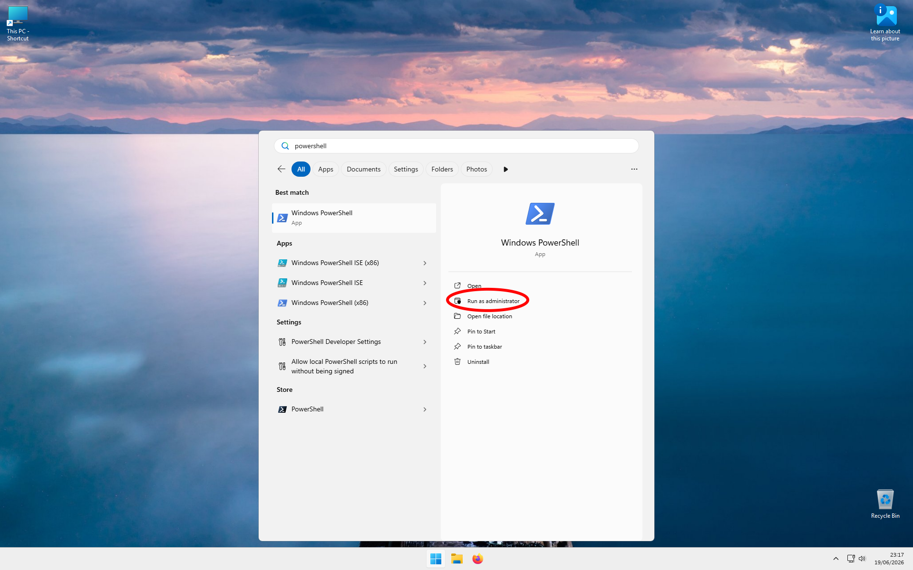
Step 03: PowerShell Opens
The PowerShell terminal will open. You will see something similar to the picture below. The colour of the terminal may be different depending on the PowerShell version.
Step 04: Install WSL
Type the following command and press ENTER:
wsl --installThis may take a while.
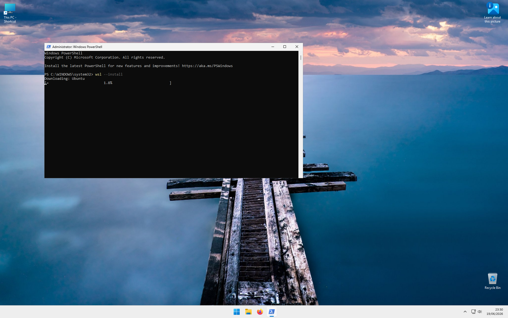
Step 05: Close the WSL Manual
A window may pop up showing the WSL user manual. You can safely close this window.
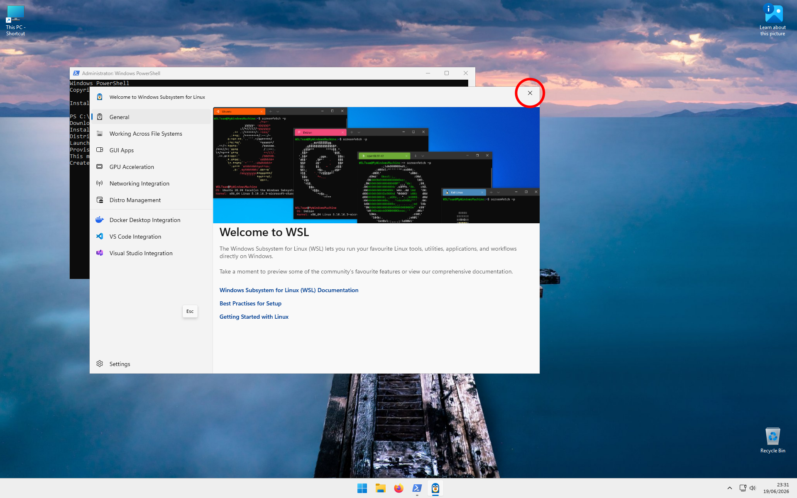
Step 06: Create a Username
During installation, you will be asked to enter a username.
Type a username and press ENTER.
Guidelines:
- Do not use spaces.
- You may use letters, numbers, underscores (
_) and dashes (-). - Best practice is to keep everything lowercase.
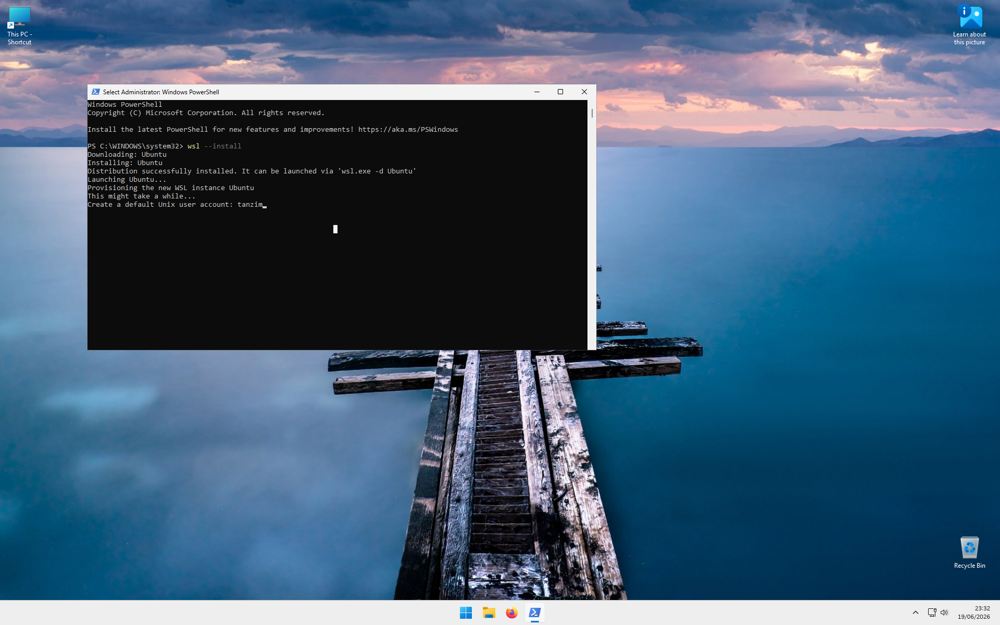
Step 07: Create a Password
You will be asked to set a password.
When typing your password, no characters will appear on the screen. This is normal and done for security reasons.
Type a password and press ENTER.
You will then be asked to re-type the password. Enter it again and press ENTER.
Tip: Linux systems require frequent password entry, so choose a password that is easy for you to remember and type.
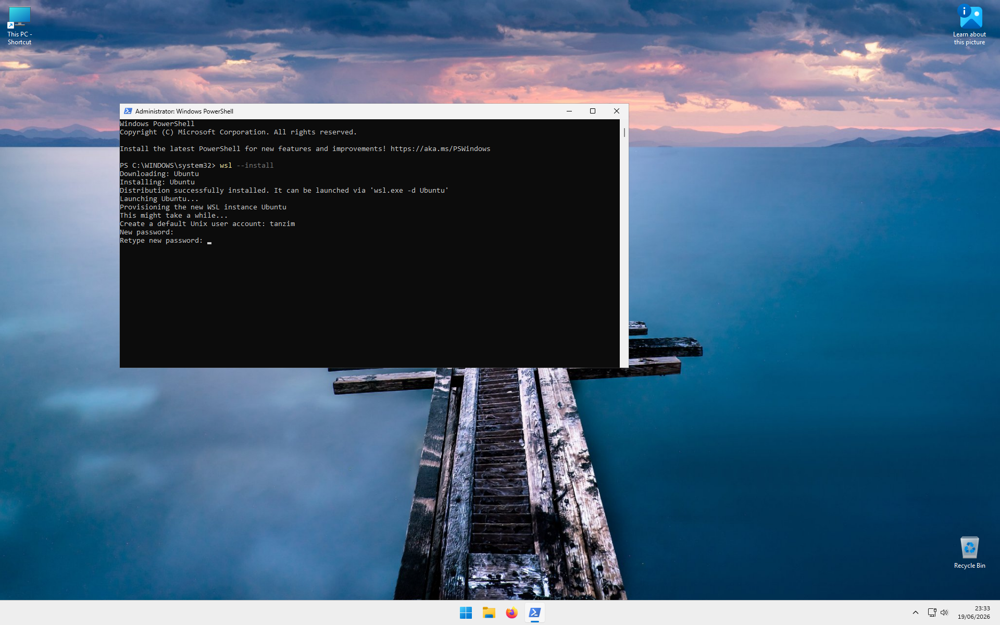
Step 08: Platform Metrics Collection
You may be asked whether you want to participate in platform metrics collection.
Type:
nand press ENTER.
You may choose y if you wish, but this is not required.
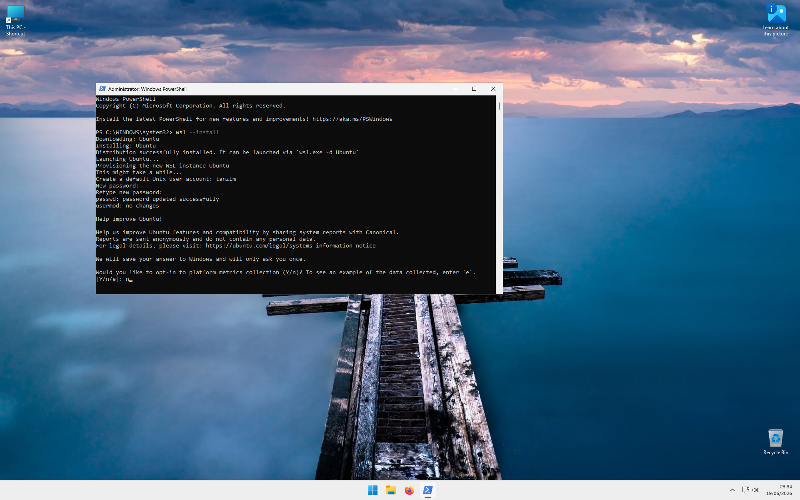
Step 09: Installation Complete
Installation is complete when you see a prompt similar to:
username@computer-name:~$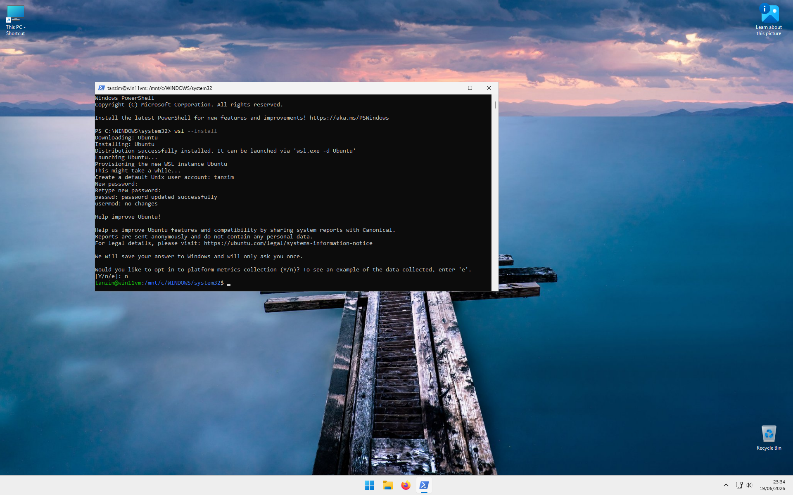
Step 10: Open Ubuntu
Close the terminal.
- Click the Start Menu.
- Search for Ubuntu.
- Click Ubuntu.
Running as administrator is not required.
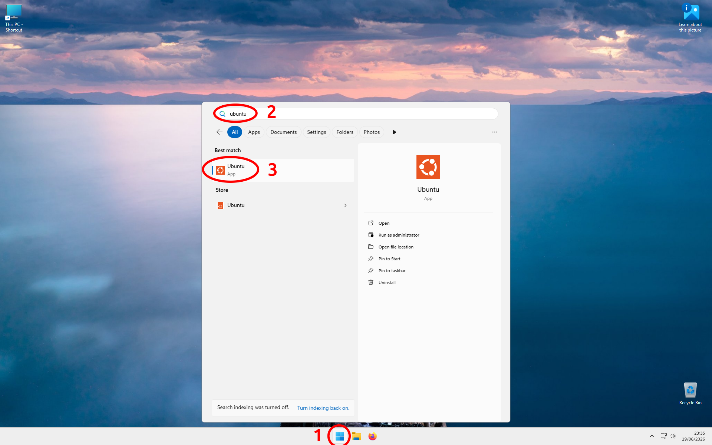
This is how you will open an Ubuntu terminal inside Windows.
Step 11: The Bash Terminal
This is called the Bash terminal.
You will see a prompt similar to:
username@computer-name:~$The tilde character (~) represents your home directory.
If you think of your computer as a house, the home directory is like entering through the front door.
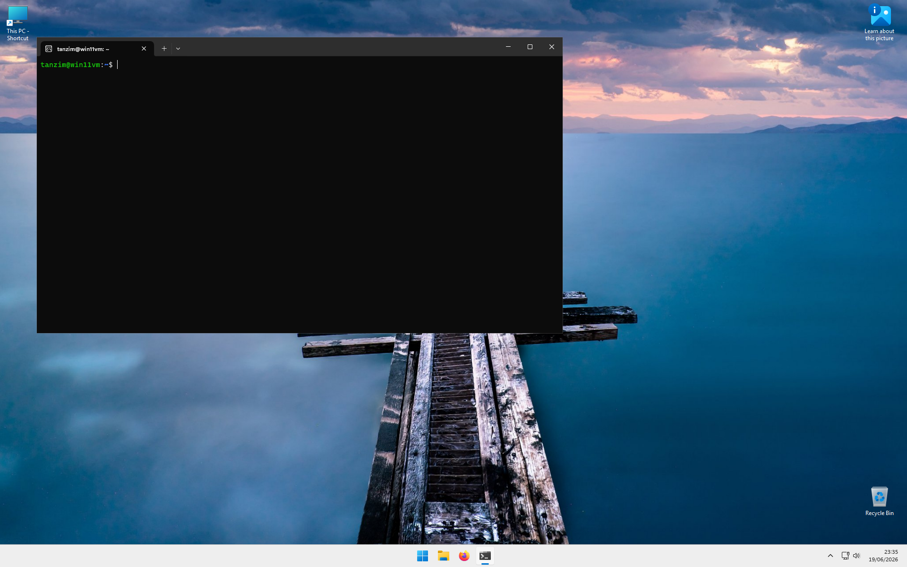
Step 12: Open Linux Files in File Explorer
Open a File Explorer window.
- Open File Explorer.
- In the left-side panel, locate Linux (penguin icon).
- Click Linux.
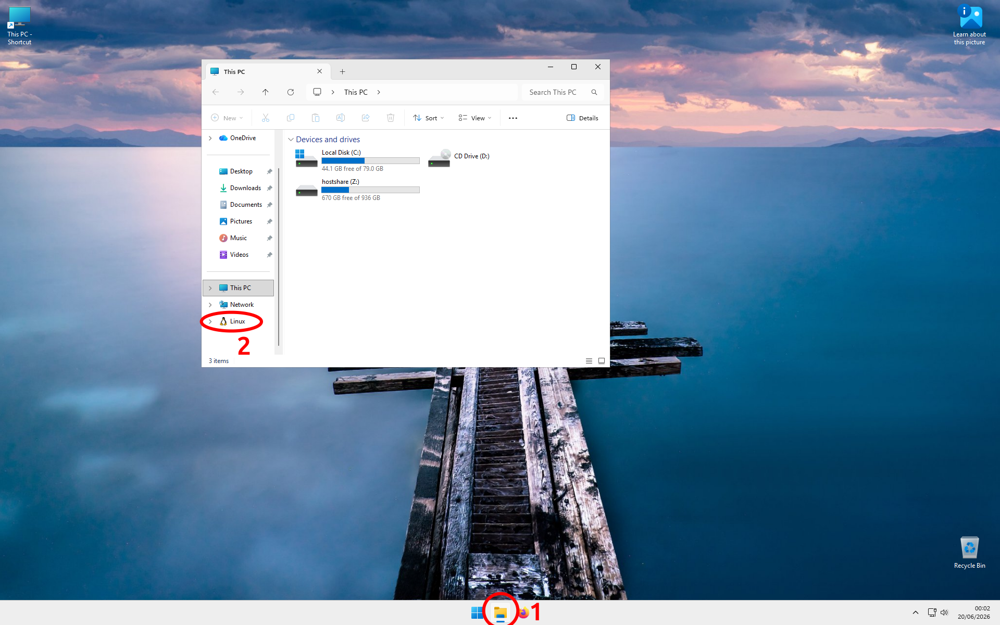
Step 13: Open Ubuntu
Double-click on Ubuntu.
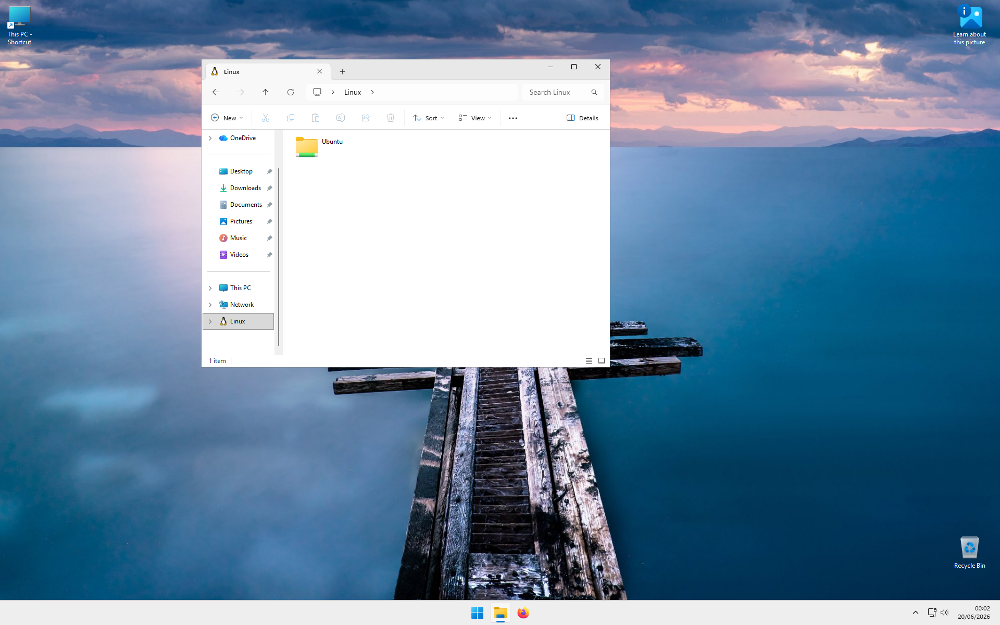
Step 14: Open Home
Double-click on home.
Step 15: Open Your User Folder
Double-click on the folder that matches the username you entered in Step 06.
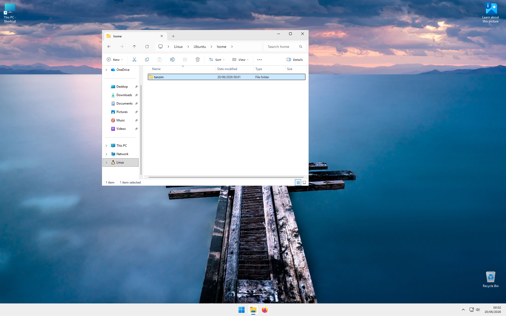
Step 16: View the Home Directory
You are now viewing the same home directory that is shown in the Ubuntu terminal, but through File Explorer.
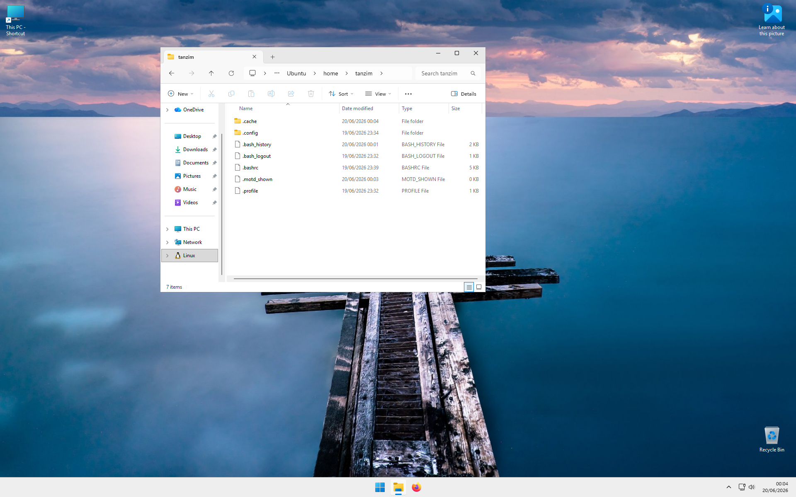
Step 17: Create a New Folder
Return to the Ubuntu terminal.
Type:
mkdir testand press ENTER.
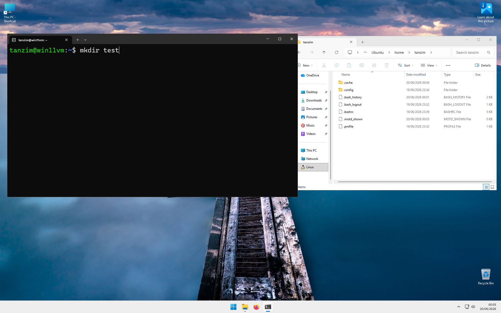
Step 18: Refresh File Explorer
Nothing may appear immediately in File Explorer.
In WSL, you often need to refresh the window before changes become visible.
Click the Refresh button near the top of the File Explorer window.
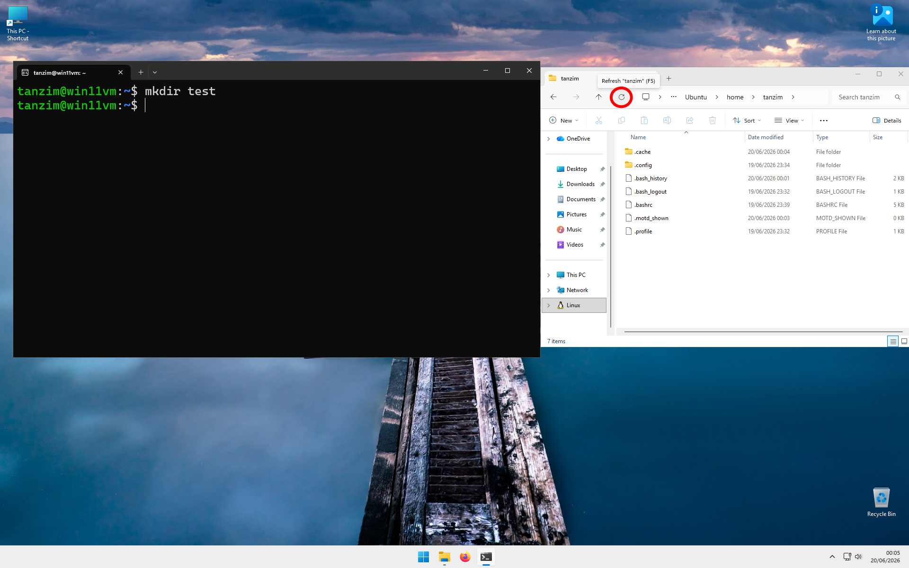
Step 19: Verify the New Folder
After refreshing, you should now see the newly created test folder.
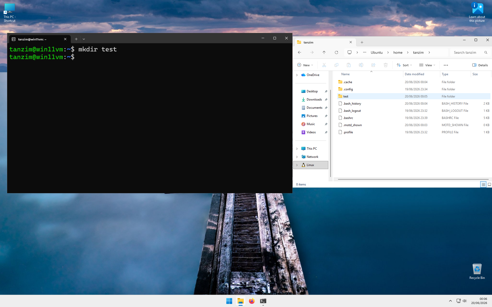
Key points
- WSL allows Linux software to run directly within Windows.
- Ubuntu is the Linux distribution used throughout this course.
- Your Linux files are stored separately from your Windows files.
- The
~symbol represents your Linux home directory. - Changes made in the terminal may require refreshing File Explorer before they appear.
- You do not need administrator privileges to use Ubuntu after installation.
- WSL only needs to be installed once on your computer.
- After completing this lesson, you can proceed to Conda installation.
Next Step
WSL has now been successfully installed.
You may now proceed to the Conda Installation Guide.